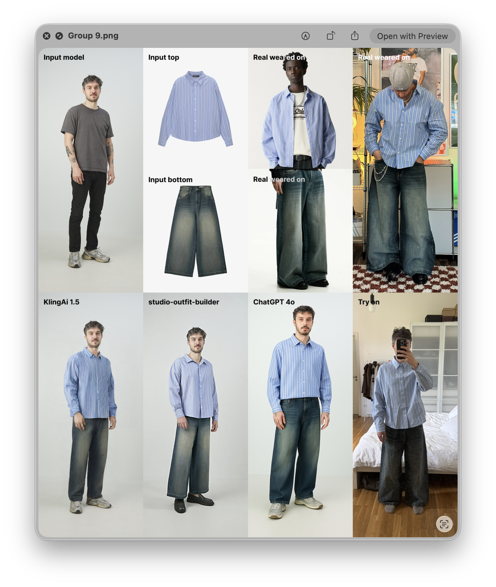
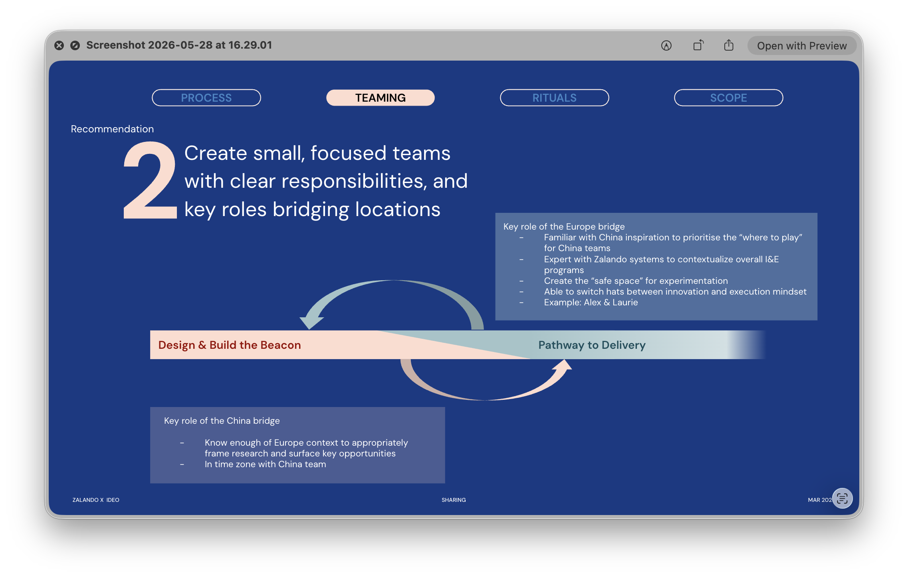
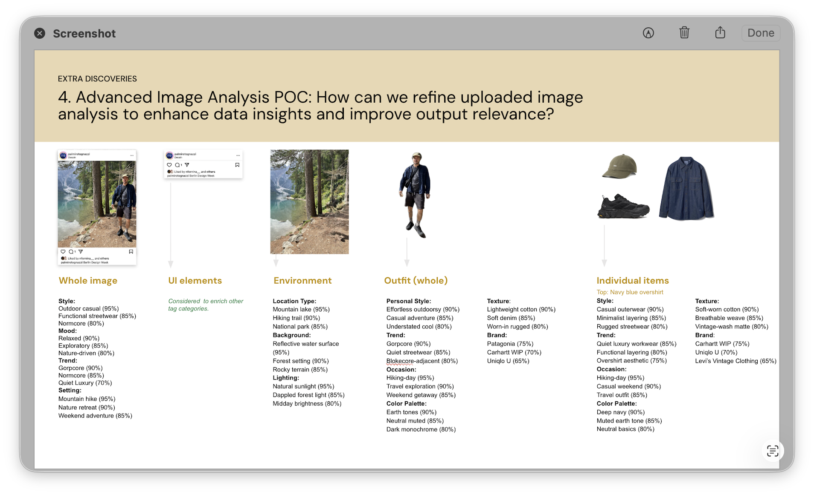

Zalando · 2024
Two days before departure, leadership decided the designer needed to be in the room. I flew to Shenzhen with no written brief. That wasn't a problem. It was the condition that made the work real.

Chinese and European commerce don't just look different. They work differently. Zalando's first office outside Europe was a deliberate bet on cross-pollination between the two. IDEO had done the research in Shanghai. I joined to lead Phase 2 and make it tangible.
Chinese and European commerce don't share the same design logic. Red means gains, not alerts. Dense interfaces signal trustworthiness, not noise. The assumptions you carry from eight years of European product work don't transfer. I built the project structure, the meeting cadences, and the shared vocabulary from scratch. Those working patterns became the template for Berlin–Shenzhen design going forward.
The question was which Chinese social commerce patterns were worth testing and bringing to Zalando in Europe. Through sacrificial concepts and a stakeholder workshop, we aligned on one: visual inspiration search.
I defined how the model should read an image: whole composition, subject, background, outfit, individual items. I designed and tested the taxonomy, the tags and categories that would make those readings useful rather than literal. Engineering handled the integrations.
To validate the virtual outfit generation, I tested multiple AI vendors (KlingAI, studio-outfit-builder, ChatGPT 4o) using photos of myself as the baseline. The finding was clear: AI-generated avatars triggered the uncanny valley. Real Zalando models were required. That became a hard product requirement, not a preference. That became the pilot: upload a photo, get a Zalando outfit inspired by it.
I onboarded the responsible product teams, wrote the handover documentation, and left. That was the point. Zilkroad was never meant to stay with me. Attribute extraction fed into content discovery. Outfit generation became the foundation for "What Should I Wear."
The highest-potential opportunity was still sitting there: too many teams, too many surfaces, no single owner. That became Occam.

